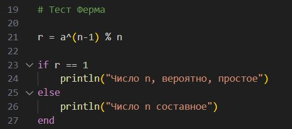
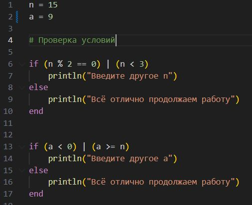
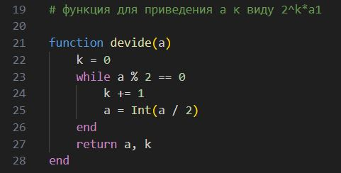
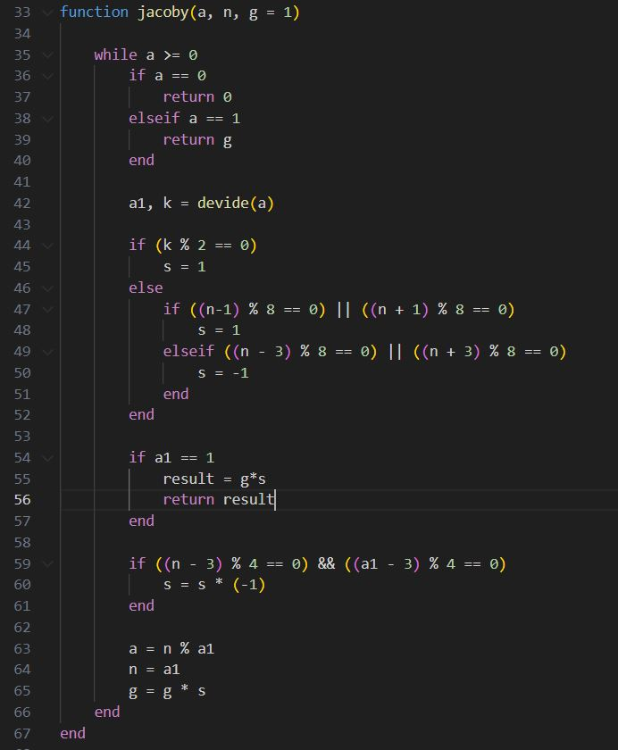
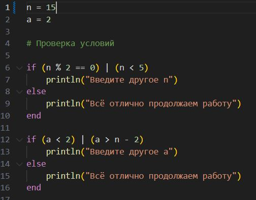

Вероятностные алгоритмы проверки чисел на простоту
Андрианова Марина Георгиевна
- РУДН, Москва, Россия
- 8 ноября 2025
Лабораторная работа 5
Цель работы
Реализовать три вероятностных алгоритма проверки чисел на простоту и алгоритм вычисления символа Якоби.
Задание
Программно реализовать на языке Julia следующие алгоритмы:
- Алгоритм, реализующий тест Ферма
- Алгоритм вычисления символа Якоби
- Алгоритм, реализующий тест Соловэя-Штрассена
- Алгоритм, реализующий тест Миллера-Рабина
1. Тест Ферма - Введение обозначений и проверка условий


1. Тест Ферма - Реализация

2. Символ Якоби - Введение обозначений и проверка условий

2. Символ Якоби - Дополнительная функция

2. Символ Якоби - Реализация

3. Тест Соловэя-Штрассена - Введение обозначений и проверка условий

3. Тест Соловэя-Штрассена - Реализация

4. Тест Миллера-Рабина - Введение обозначений и проверка условий

4. Тест Миллера-Рабина - Реализация

Выводы
В процессе выполнения работы я реализовала разные виды вероятностных алгоритмов проверки чисел на простоту на языке программирования Julia.